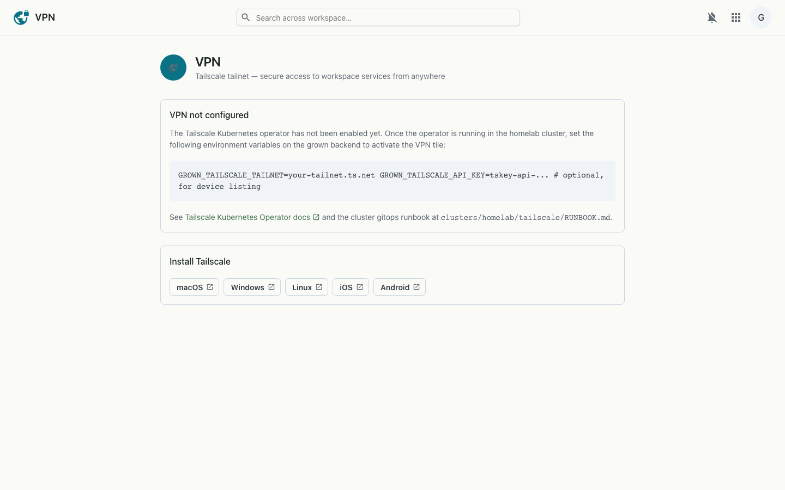

A Tailscale tailnet for your workspace — secure, private access to internal services from anywhere, with nothing exposed to the open internet.
The VPN page is the front door to your workspace's Tailscale tailnet. It shows whether the integration is active, lists the devices on the tailnet, points to the internal services you can reach over it, and gives you everything you need to join — install links and step-by-step instructions.

VPN is backed by the Tailscale Kubernetes operator running in the cluster. The workspace reads tailnet status — and, with a Tailscale API key, the device list — and renders it here. Devices that sign in to the same tailnet gain access to the services the operator exposes; no ports are opened to the public internet.
GROWN_TAILSCALE_TAILNET + optional GROWN_TAILSCALE_API_KEY